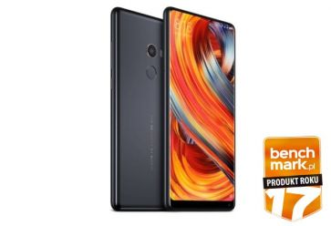
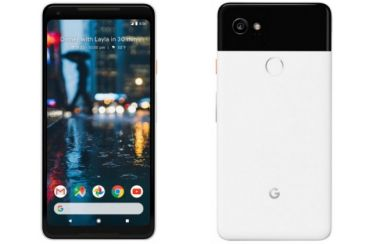
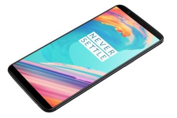
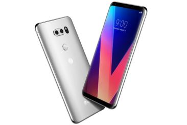

Smartfony
Wybraliśmy najlepsze, najbardziej godne polecenia smartfony i prezentujemy ich aktualne ceny w polskich sklepach.
Szybkie, wydajne, nowoczesne, z dobrymi ekranami i aparatami. Oto TOP 5 najlepszych telefonów flagowych.
1. Xiaomi Mi Mix 2
Xiaomi Mi Mix 2 od czytelników portalu benchmark.pl dostał wyróznienie "Smartfon roku 2017".
Zasłużył sobie na to przede wszystkim dlatego, że oferuje wiele za całkiem rozsądne pieniądze.
W popularnych chińskich sklepach kosztuje mniej niż 1600 zł co jest kwotą bardziej niż adekwatną do jego możliwości i jakości.
Co prawda w Polsce jego cena jest znacznie wyższa, ale... przecież wybór sklepu należy do Was.
Xiaomi Mi Mix 2 ma duży wyświetlacz 5,99" 18:9 z bardzo cienkimi ramkami z trzech stron.
Dzięki temu całość prezentuje się nowocześnie i elegancko. Obraz jest jasny i szczegółowy, a kolory nasycone.
System operacyjny Android z aktualizacją do wersji 8.0 jest świetnie zoptymalizowany i działa szybko.
2. Google Pixel 2 XL
Google Pixel 2 XL to superszybki smartfon z super aparatem i niestety... superwysoką ceną.
Jego największą zaletą jest czysty idealnie zoptymalizowany system Android 8.1 z przyszłą aktualizacją do Androida 9.0.
W połączeniu z procesorem Snapdragon 835 i 4 GB RAM'u oraz szybką pamięcią masową smartfon śmiaga prawie równie szybko jak wylatują złotówki z
Waszego portfela gdy za niego płacicie. Kwota jest niebagatelna - około 4000 zł, ale... dostajecie najpłynniej działajacy smartfon z Androidem,
który przy okazji ma znakomity wyświetlacz P-OLED, NFC, Bluetooth 5.0 i wspomniany wcześniej imponujący aparat.
Pod względem jakości zdjęć jest to najlepszy smartfon, przynajmniej na początku roku 2018.
3. OnePlus 5T
OnePlus 5T to smartfon, który imponuje szybkością działania. Pod tym względem jest to smartfon niemal doskonały.
Zawdzięcza to przede wszystkim znakomitej optymalizacji systemu Android, ale swoją zasługę mają w tym również dobre podzespoły - wydajny procesor Snapdragon 835,
6 lub 8 GB pamięci RAM i 640 lub 128 GB szybkiej pamięci masowej UFS 2.1. Na dużą pochwałę zasługuje też jakość wykonania obudowy,
szybki czytnik linii papilarnych oraz dobry wyświetlacz AMOLED 18:9. W chińskich sklepach kupimy go już za około 1950 zł.
4. LG V30
Oto propozycja z najwyższej półki dla osób które stawiają na bardzo atrakcyjną stylistykę.
LG V30 to jeden z najładniejszych smartfonów flagowych, a w dodatku jego szklano-metalowa obudowa jest wodoszczelna (IP68).
Ma również duży wyświetlacz OLED otoczony cienkimi ramkami, który imponuje jakością obrazu, wydajny procesor, nowoczesną łączność bezprzewodową
(w tym Bluetooth 5.0 i NFC), wyjście słuchawkowe 3,5 mm ze znakomitą jakością dźwięku (Quad DC) oraz robi bardzo dobrej jakości zdjęcia i filmy.
To ładny i dobry smarfon flagowy.
5. Samsung Galaxy S8
Galaxy S8 wyposażony jest w bardzo dobry wyświetlacz Super AMOLED z zakrzywionymi krawędziami.
Nienaganna stylistyka nie przeszkodziła w zadbaniu o obudowę odporną na szkodliwe działanie pyłu oraz wody (IP68). Jej wnętrze skrywa bardzo wydajne podzespoły,
Galaxy S8 dysponuje ośmiordzeniowym procesorem Exynos 8895, 4 GB pamięci RAM oraz kamerą 12 Mpix z obiektywem f/1.7 i rewelacyjnym autofokusem.
Na tle konkurentów model ten wyróżnia się obecnością skanera tęczówki oka, który niektórym osobom zrekompensuje zapewne nieco mało przemyślane umiejscowienie
czytnika linii papilarnych. Galaxy S8 jest ładny, bardzo poręczny i nowoczesny.